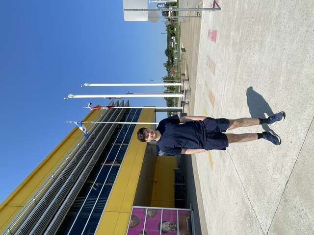
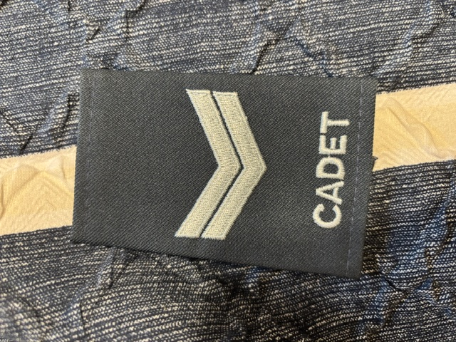
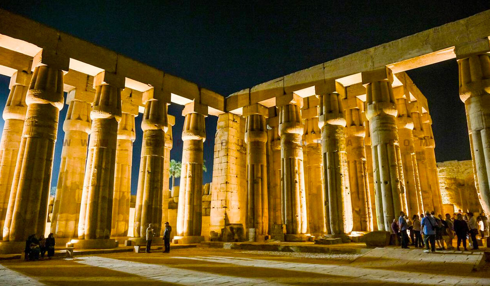
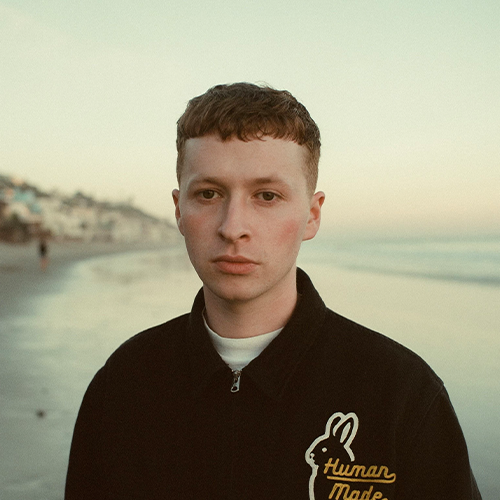
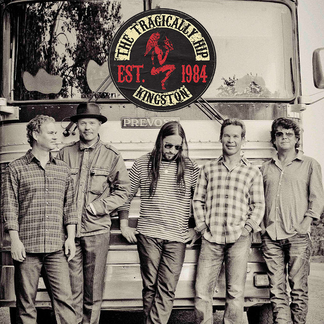
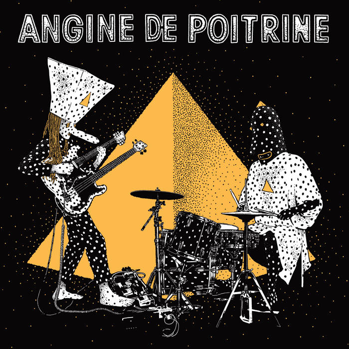

Hi, I'm Youcef. I'm a web development student who likes building things, experimenting with code, design, and exploring new interests.
My name is Youcef Abdi-LeBlanc. Online, I use the username termin on YouTube. The name came from my liking of The Terminator as a child. My other username is Ethic, which I use for gaming.
I like programming because I enjoy being able to build things, especially websites, from scratch. I'm also interested in languages and learn them on and off. Right now, I'm learning Dutch and Arabic.
I'm currently exploring Node.js and continuing to learn more about web development. I also enjoy travelling, both within my own country and to other countries.
When I was a teenager, I was part of the Canadian Cadet Program for two years. It was an interesting experience and helped develop my interest in aviation, which is still one of my interests today.
Outside of programming, I enjoy movies, architecture, exercise (especially running), reading, following politics, aviation, and learning languages. My favourite game is mahjong, which I also enjoy playing in my free time.



New portfolio with Three.js. I have been doing a lot of projects as of late for practice.
Coding: Node.js & Three.js
Languages: Dutch & Arabic
My interests include web development, music, aviation, architecture, movies, exercise (especially running), reading, politics, and learning languages.



My three favourite projects were the RCAF aircraft quiz app, my portfolio, and The Comic Archive.
Here is my portfolio website where i share projects that I have completed while in class and on my internship.
Visit softEthic portfolio.Movie Database website i made with HTML,CSS and JavaScript.
Visit BMD site(Best Movie Directors Database)A comic book archive website i buit using HTML, CSS, and JavaScript.
Visit The Comic Archive